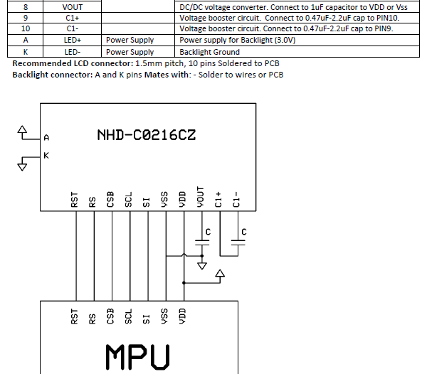
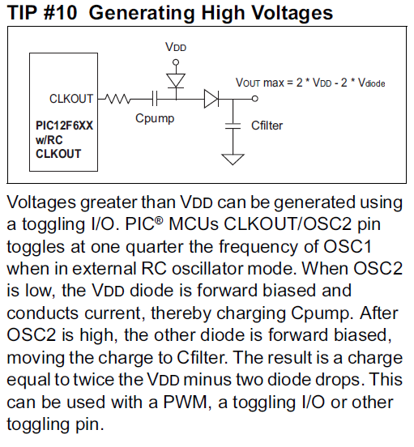

by Dan Peirce B.Sc.
Reformated from dokuwiki on July 20, 2013
This is from the datasheet of the 3.3 volt LCD datasheet. The capacitors shown are part of a voltage booster (charge pump). See pins 8, 9 and 10 (from http://www.newhavendisplay.com/specs/NHD-C0216CZ-FSW-FBW-3V3.pdf )

Could be used to generate RS232 voltages.
By the way Microchip provides a tip of a very simple charge pump circuit to generate a voltage greater than Vdd. A similar circuit could be used to generate a negative voltage. If the existing level shifter does not work with the G-m instrument we could possibly modify it to use voltages generated from PIC charge pump circuits.
( see tip 10 from http://ww1.microchip.com/downloads/en/devicedoc/40040b.pdf )
